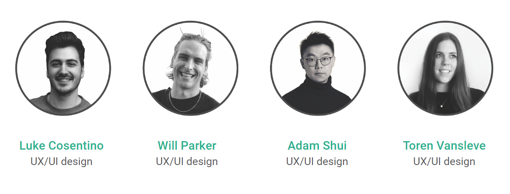
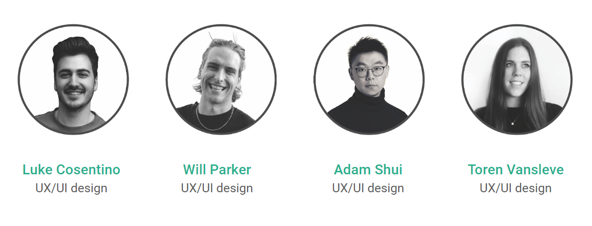

Outline
The goal of this design challenge was to redesign the information architecture and homepage layout for Head Start Homes, a non-profit organization. They’re a charity assisting disadvantaged Australians to secure their first homes in an effort to break the cycle of intergenerational poverty.
Our team took an agile development approach based on the project timeline and scope, managing tasks using Trello and utilizing the double diamond design process throughout.
 
